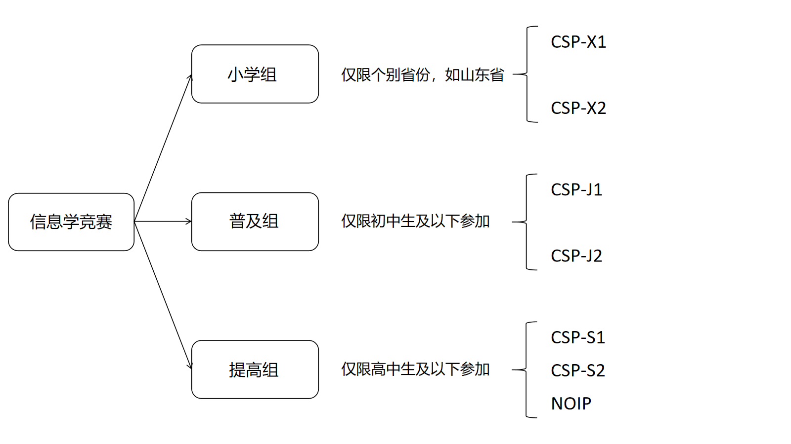

介绍
全国青少年信息学奥林匹克联赛（National Olympiad in Informatics in Provinces，简称NOIP）自1995年至2020年已举办25次。每年由中国计算机学会统一组织。 NOIP在同一时间、不同地点以各省市为单位由特派员组织。全国统一大纲、统一试卷。初、高中或其他中等专业学校的学生可报名参加联赛。联赛分初赛和复赛两个阶段。初赛考察通用和实用的计算机科学知识，以笔试形式进行。复赛为程序设计，须在计算机上调试完成。参加初赛者须达到一定分数线后才有资格参加复赛。联赛分普及组和提高组两个组别，难度不同，分别面向初中和高中阶段的学生。(摘自百度百科)
一般情况下信息学竞赛是指以全国青少年信息学奥林匹克竞赛（NOIP）为代表的一系列赛事，其参赛选手通常为高中阶段及以下的学生。由于其具体赛事流程较为复杂，我们以一张图表来进行解释。
其中CSP是指非专业级别软件能力认证，通常分为初赛和复赛两轮。初赛为笔试，全部为选择题或判断题，复赛为机试，选手需要上机编写代码并通过测试。
作为全国五大学科竞赛之一，信息学与数学、物理、化学、生物竞赛并列，同为高中竞赛学科之一。信息学竞赛主办方为中国计算机学会（CCF），官方指定语言为C++。信息学竞赛注重对选手编写程序解决实际问题能力的考察。在最广为人知的NOIP考试中共有4道题目，满分为400分，考试时间为4.5小时。选手需对给出的问题编写程序解决，其选手程序将由比赛官方CCF统一进行评测。